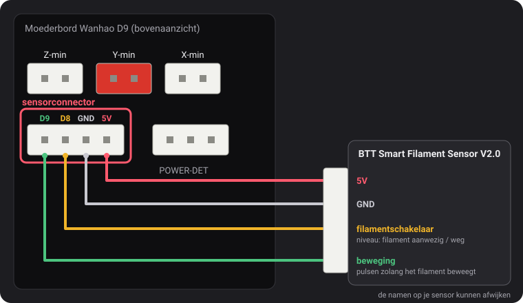
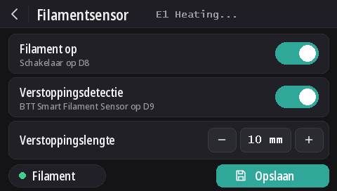

Filamentsensoren
Vanaf v2.0.5 lezen deze firmwares twee soorten sensoren: de filamentschakelaar van Wanhao, en de BTT Smart Filament Sensor V2.0, die ook merkt wanneer het filament niet meer beweegt (spoel in de knoop, verstopping, weggeslepen filament). Detectie van einde filament staat standaard aan op elk model, verstoppingsdetectie staat uit.
De sensorconnector

De 4-pins connector links van POWER-DET, onder de connectoren van de eindschakelaars, voert D9, D8, GND en 5V, in die volgorde. De pinnamen komen uit een aansluitschema van Wanhao dat dustovich vond en deelde op de Discord; op de achterkant van het bord staan dezelfde vier pinnen als CTRL, BTN, GND en VCC.
- D8 is de ingang voor einde filament die de eigen firmware van Wanhao leest.
- D9 wordt niet gebruikt door de firmware van Wanhao: deze builds lezen daar het bewegingssignaal van de BTT-sensor.
Op het scherm
Met DGUS Reloaded 2.0 op het scherm (firmware v2.0.9 of nieuwer): Instellingen → Filament → Filamentsensor.
- Filament op zet alle detectie aan of uit, zoals
M412 S1/M412 S0. - Verstoppingsdetectie zet verstoppingsdetectie aan met de lengte eronder, of uit (
L0). - Verstoppingslengte: − en + veranderen die met 1 mm; tik op het getal om het in te typen.
- De stip Filament is groen zolang de filamentschakelaar filament ziet, rood als dat niet zo is.
- Wijzigingen gelden meteen. Opslaan bewaart ze, zoals
M500. De terugpijl gaat terug zonder op te slaan: bij de volgende start zijn de opgeslagen instellingen weer actief.

De M412-opdrachten
Alles wordt via USB ingesteld vanuit een seriële terminal (Pronterface, de terminal van je slicer of van OctoPrint,
250000 baud). Parameters kun je in één opdracht combineren, bijvoorbeeld M412 S1 L10.
| Opdracht | Wat het doet |
|---|---|
M412 | Toont de status, bijvoorbeeld Filament runout ON ; Distance 5.00mm ; Motion distance 0.00mm. |
M412 S1 | Zet detectie aan: de filamentschakelaar, en ook verstoppingsdetectie als de verstoppingslengte niet 0 is. |
M412 S0 | Zet alle detectie uit, schakelaar en verstopping. |
M412 D5 | Zodra de schakelaar geen filament meer ziet, wordt nog 5 mm doorgeprint voordat de print pauzeert, om het filament tussen de sensor en de nozzle op te gebruiken. Standaard 5 mm. |
M412 L10 | Zet verstoppingsdetectie aan (alleen BTT-sensor): pauzeert wanneer er 10 mm filament door de extruder gaat zonder dat het wieltje van de sensor draait. |
M412 L0 | Zet verstoppingsdetectie uit en laat de filamentschakelaar zoals hij is. Dit is de standaardinstelling. |
M500 | Slaat de instellingen op. Zonder deze opdracht gaat een wijziging verloren als de printer wordt uitgezet. |
M119 | De regel filament toont TRIGGERED met filament geladen, open zonder. |
M412 L0, en L op zichzelf, komen uit onze wijziging aan Marlin
(MarlinFirmware/Marlin#28585), die in deze firmwares is ingebouwd. In Marlin zonder die wijziging wordt L
op zichzelf genegeerd en pauzeert L0 de print meteen wegens een verstopping.
De filamentschakelaar van Wanhao
Die vertelt de firmware of er filament is. Raakt het filament op, dan pauzeert de print na nog 5 mm filament en start het scherm een filamentwissel.
Hij staat sinds v2.0.8 standaard aan op elk model. Als er niets op D8 is aangesloten, houdt de pull-upweerstand van het bord de pin op 5 V, wat wordt gelezen als “filament aanwezig”: de detectie gaat dan nooit af, dus hij kan aan blijven staan, met of zonder sensor. Sluit je een filamentschakelaar aan op D8, dan werkt die meteen.
- Verstoppingsdetectie blijft uit (
L0): deze schakelaar kan niet zien of het filament beweegt. - De schakelaar uitzetten:
M412 S0en daarnaM500. - Instellingen die door een eerdere release zijn opgeslagen, houden hun aan/uit-stand. Aanzetten:
M412 S1en daarnaM500, of terug naar de standaardwaarden (M502en daarnaM500, wat ook de Z-offset van je sensor en de mesh wist).
BTT Smart Filament Sensor V2.0
Deze sensor heeft twee uitgangen, en de firmware leest ze verschillend:
- De filamentschakelaar (naar D8) geeft een niveau: 5 V zolang er filament is, 0 V zodra het weg is.
- De bewegingsuitgang (naar D9) komt van een klein wieltje dat door het passerende filament wordt rondgedraaid. Om de paar millimeter filament wisselt de uitgang tussen 0 V en 5 V. De firmware let alleen op die wisselingen: duwt de extruder de verstoppingslengte aan filament door zonder één wisseling, dan volgt het filament niet (spoel in de knoop, verstopping, weggeslepen filament) en pauzeert de print. De filamentschakelaar kan dat niet zien: bij een verstopping is het filament er nog gewoon.
Aansluiten
5V op 5V, GND op GND, het signaal van de filamentschakelaar op D8 en het bewegingssignaal op D9. De namen op de kabel van de sensor kunnen afwijken.
Aanzetten
M412 S1 L10
M500Pauzeren prints zonder reden, verhoog dan de verstoppingslengte: M412 L15 en daarna M500. Om alleen
de filamentschakelaar te houden: M412 L0 en daarna M500.
Controleren
M412: Filament runout ON ; Distance 5.00mm ; Motion distance 10.00mm.M119met filament geladen: filament: TRIGGERED. Verandert die regel als je het filament met de hand doorduwt in plaats van wanneer je het erin steekt of eruit haalt, dan zijn de twee signaaldraden verwisseld: wissel D8 en D9 om.
L0 nooit),
maar nog niet met de BTT-sensor zelf. Leest de schakelaar andersom (open met filament
geladen), laat het ons dan weten op Discord.Bijwerken vanaf v2.0.5 of v2.0.6
Die releases konden verstoppingsdetectie niet uitzetten, dus gebruikten ze een verstoppingslengte die nooit bereikt zou worden: 100 m in
v2.0.5 (eigenlijk te kort: ongeveer een derde van een spoel van 1 kg, waarna een printer die aan bleef staan zonder reden kon pauzeren) en
10 km in v2.0.6. Bij het opstarten van de printer laadt v2.0.7 die twee waarden als L0. Een echte lengte die je
voor een BTT-sensor hebt ingesteld, zoals L10, blijft behouden. Vanaf v2.0.4 of ouder wordt de afstand van 5 mm voor
einde filament geladen in plaats van de 0 die die versies opsloegen.